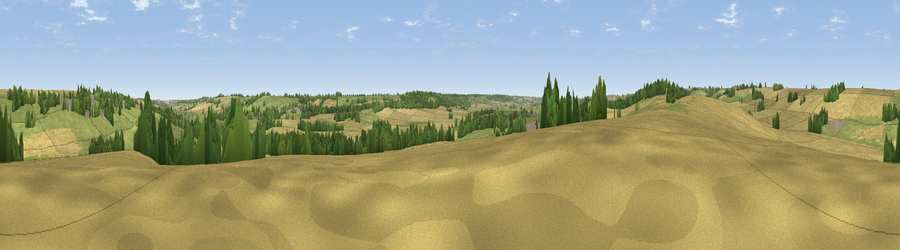

Viewpoint near Thorpe by Water
#35243 in England · top 51% of its area beats it · near Thorpe by WaterWhere it is
The exact computed spot (SP 89625 97425). Click the marker for map links.
The view, rendered

A 360° render of this exact spot computed from the terrain model, tree cover and land cover — summer colours, afternoon light, calibrated against photographs of famous viewpoints. Real trees, hedges and buildings will differ in detail.
The panorama
Grey silhouette: terrain skyline in each direction (720 bearings, Earth curvature and refraction included). Dashed green: skyline with trees (+15 m) and buildings (+8 m) as obstacles. Blue strip: how far the ground is visible on each bearing.
Where the view opens
Wedge length = distance to the farthest visible ground on that bearing (vegetation-aware). Rings at 10, 25 and 50 km.
What fills the view
51% cropland · 38% grassland · 10% woodland ·
Angular shares of the visible panorama (visual magnitude), not map area. Landscape diversity 0.42 (0–1 Shannon).
Key numbers
More beautiful places nearby
The staircase of upgrades: each row has a higher view potential than everything closer. Driving times are estimates from straight-line distance, calibrated against real road routing — check an actual route before setting out.
| Place | Direction | Drive | Score |
|---|---|---|---|
| Viewpoint near Thorpe by Water | WSW · 1 km | ~4 min | 36.0 |
| Viewpoint near Stoke Dry | WSW · 4 km | ~9 min | 47.5 |
| Viewpoint near Rockingham | SSW · 6 km | ~13 min | 48.7 |
| Viewpoint near East Norton | WNW · 12 km | ~22 min | 49.6 |
| Robin-a-Tiptoe Hill | WNW · 14 km | ~25 min | 54.1 |
| Whatborough Hill | NW · 15 km | ~27 min | 55.9 |
| Viewpoint near Pickwell | NW · 19 km | ~33 min | 57.3 |
| Viewpoint near Burrough on the Hill | NW · 20 km | ~34 min | 63.4 |
52.56728, -0.67914 · source: screening · position refined by local search. Computed location — check access rights before visiting.